Reunião de Apoio
Segunda-feira (Semanal)
19h00 - 21h00

Acesso internoNúcleo de Apoio aos Toxicômanos e Alcoólatras
O NATA atua com acolhimento, cuidado e desenvolvimento comunitário, criando oportunidades para crianças, famílias e moradores acompanhados pelos projetos sociais.
A plataforma ajuda a organizar projetos, participantes, voluntários, doações e rotinas internas, aproximando a gestão do trabalho que acontece todos os dias na comunidade.
Acompanhe os horários de nossas atividades semanais e mensais e participe com a comunidade.
Segunda-feira (Semanal)
19h00 - 21h00
1ª Segunda-feira do mês
19h00
1ª Terça-feira do mês
19h00
Quarta-feira (Semanal)
18h30 - 19h30
Sexta-feira (Semanal)
19h30 - 21h30
Sábado (Semanal)
16h20 - 17h30
Carregando projetos cadastrados...
Contribua com recursos, alimentos, materiais ou itens de uso diário.
Doar agoraCompartilhe tempo, conhecimento e cuidado nos projetos da comunidade.
Quero ajudarAjude a ampliar a rede de apoio apresentando o NATA para mais pessoas.
Contato